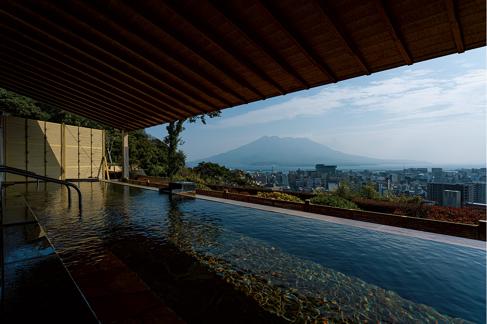
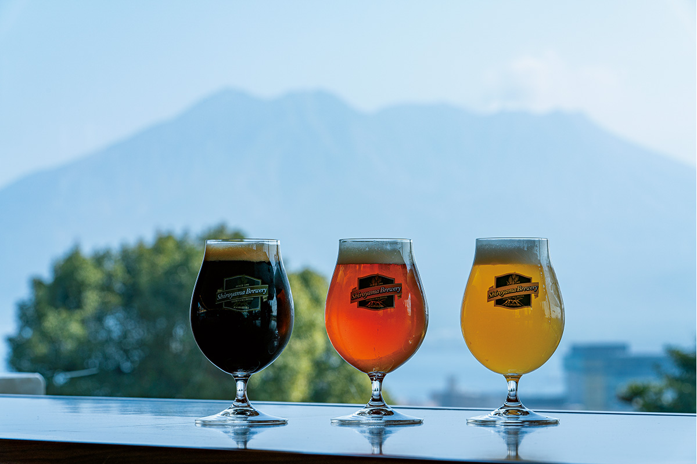
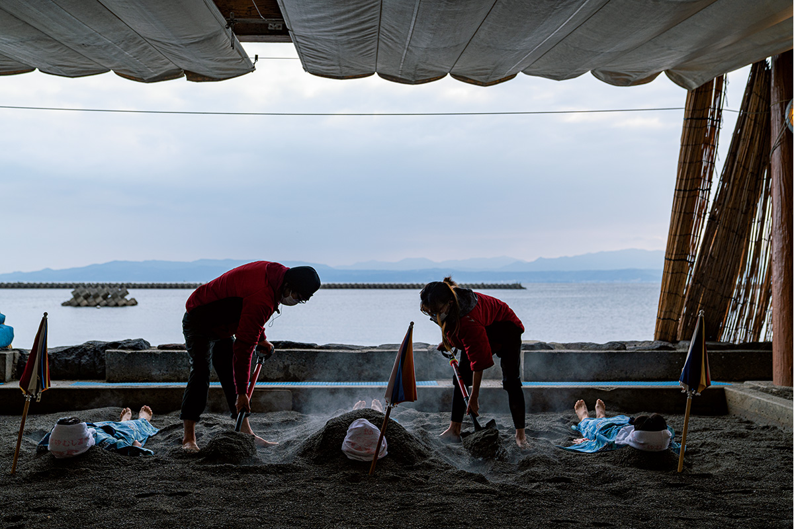
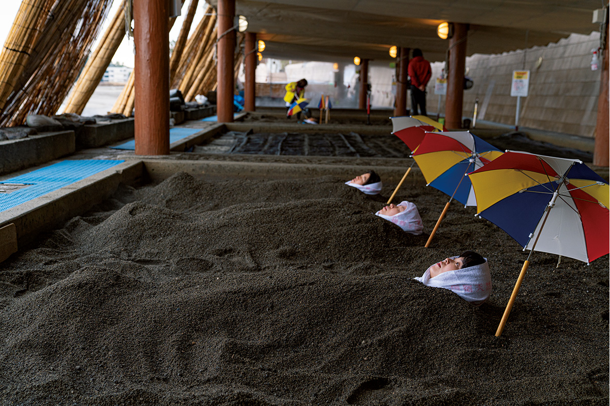
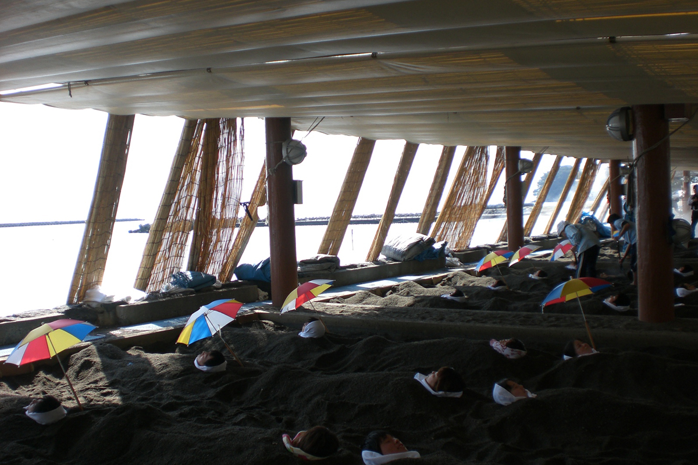
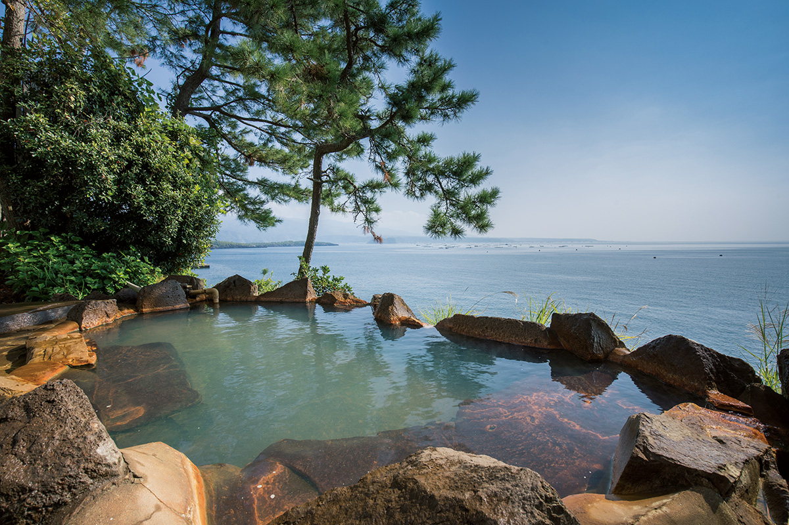
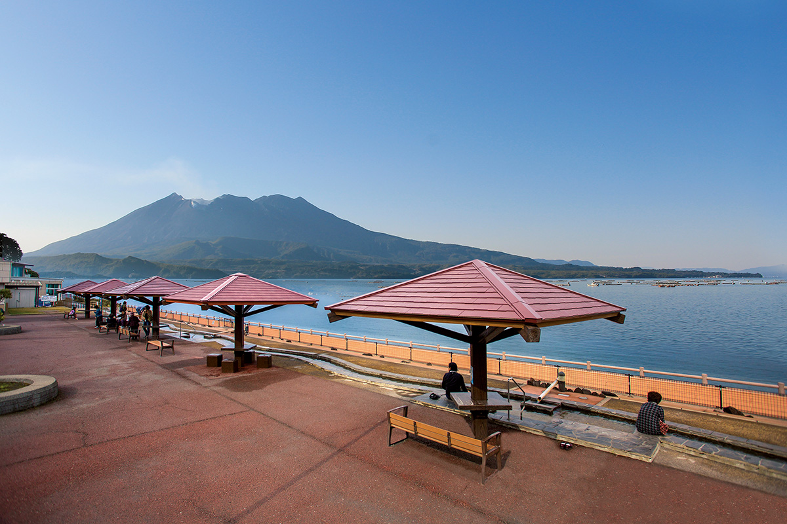

Префектура Кагосима · залив Кинко · онсэны
Онсэны залива Кинко: ванна с видом на Сакурадзиму и горячий песок Ибусуки

Где есть вулкан, там есть и горячие источники. Кагосима живёт по соседству с действующей Сакурадзимой, и онсэнов здесь столько, что префектуру называют их королевством.
Земля
Префектура горячих источников
Кагосима лежит в одном из самых вулканически активных районов мира, и подземное тепло здесь чувствуется буквально. В префектуре около 100 курортов с онсэнами и больше 2700 источников: по их числу Кагосима вторая в Японии, по объёму воды третья, а по количеству общественных бань с термальной водой снова вторая.
Купаются здесь у моря и в горах, у рек и на отдалённых островах. Есть и старые курорты, куда приезжали князья из рода Симадзу и герои реставрации Мэйдзи: Такамори Сайго (1828–1877), самурай из Сацумы и один из вождей переворота, и Рёма Сакамото (1836–1867), бывший самурай из Тосы, который помог объединить противников сёгуната. Во многих гостиницах можно искупаться без ночёвки, есть семейные ванны, которые снимают целиком, городские бани с термальной водой и множество ножных ванн.
Сильнее всего вулкан ощущается в двух местах. Первое: панорамные ванны в городе Кагосима, откуда Сакурадзима видна как на ладони. Второе: Ибусуки на юге полуострова Сацума, где тебя закапывают в горячий песок.
Вид
Самая красивая открытая ванна Кагосимы
Отель SHIROYAMA HOTEL kagoshima открылся в 1963 году под названием «Сирояма канко хотэру» и давно считается одним из самых солидных в городе. Он стоит рядом со смотровой площадкой холма Сирояма, откуда открывается знаменитый вид на Сакурадзиму. Тот же вид достаётся гостям открытой ванны «Сацума-но ю»: впереди вулкан и старый призамковый город.
Вода поднимается с глубины около километра. Это гидрокарбонатный источник, богатый кальцием, магнием и натрием. Его называют «водой красоты»: он снимает отмершие клетки кожи и очищает поры, и после купания кожа становится гладкой.

Купаться можно и без ночёвки: в 2021 году вход стоил 2680 иен с налогами, гостям отеля бесплатно. Есть и дневные планы, где ванна идёт вместе с едой.
SHIROYAMA HOTEL kagoshima, открытая ванна «Сацума-но ю»
- Адрес
- префектура Кагосима, город Кагосима, Синсёин-тё, 41-1
- Телефон
- +81 570-07-4680
- Часы работы
- 5:30–24:00 (с октября по март с 6:00), можно без ночёвки
- Выходные
- бывают дни, когда закрыт весь отель
- Цены / Вход
- 2680 иен с налогами, для гостей отеля бесплатно
Песок
«Сараку»: горячий песок Ибусуки

О песчаных ваннах Ибусуки писали уже в середине XVI века: они упоминаются в отчёте о Японии, который Жорже Алвареш составил для Франциска Ксаверия ещё до приезда миссионера в страну. К середине эпохи Эдо, в XVIII веке, так здесь уже лечились.
Под пляжем Суригахама скапливается вода температурой около 90 °C, она пропитывает песок, и на берегу можно принимать песчаные ванны. Песчаные ванны бывают разные, но на естественном подземном тепле они устроены в Японии только здесь.
Тебя укладывают в юкате прямо на пляже и засыпают песком. Под его тяжестью быстро прогреваешься до самой глубины, а когда выбираешься, всё тело кажется лёгким. Положение лёжа помогает крови возвращаться к сердцу, тепло и давление песка разгоняют кровообращение, и температура внутри тела поднимается: эти эффекты подтверждены медиками. Считается, что ванна помогает выводить из организма лишнее и снимает воспаление и боль, а очищает и освежает она в три-четыре раза сильнее обычного онсэна. Не меньше значит и само ощущение: лежишь в тёплом песчаном одеяле, слушаешь прибой и спокойно потеешь.


«Сараку» одна из главных песчаных бань Ибусуки. Переодеваешься в юкату, 10–15 минут лежишь в песке на берегу, а когда пропотеешь, идёшь в ванну внутри здания. Вода Ибусуки солёная, хлоридно-натриевая: считается, что это древняя морская вода, запертая глубоко под землёй, и кожа после неё мягкая. Кроме песка и ванны в здании есть инфракрасная сауна и ресторан. Песчаная ванна без ночёвки стоила 1100 иен для взрослых (в 2021 и 2024 году, юката включена) и 600 иен для детей в 2024 году.
Песчаные ванны «Сараку»
- Адрес
- префектура Кагосима, город Ибусуки, Юнохама, 5-25-18
- Телефон
- +81 993-23-3900
- Часы работы
- 8:30–21:00, последний вход в 20:30
- Выходные
- без выходных, в июле и декабре закрывается на техническое обслуживание
- Цены / Вход
- взрослые 1100 иен, дети 600 иен
У залива
Ещё два онсэна, куда можно заехать днём
Онсэн Аримура на Сакурадзиме

Онсэн Аримура славился тем, что помогает при болезнях и травмах, и его любил Такамори Сайго. Во время большого извержения Сакурадзимы в эпоху Тайсё источник засыпало. Онсэн вернулся к жизни, когда гостиница «Сакурадзима хотэру» провела воду из другого источника в том же районе. Теперь здесь купаются в проточной термальной воде, а залив Кинко прямо перед глазами. В 2021 году вход стоил 600 иен; гостей со стороны пускают днём, но записаться нужно за три дня.
«Сакурадзима хотэру» (онсэн Аримура)
- Адрес
- префектура Кагосима, город Кагосима, Фуруса-тё, 1078-64
- Телефон
- +81 99-221-2311
- Часы работы
- 6:30–8:30, 16:00–21:30; без ночёвки 14:00–18:00, запись не позже чем за три дня
- Выходные
- нерегулярно
- Цены / Вход
- 600 иен
Придорожная станция Тарумидзу

Придорожная станция «Тарумидзу Юттари-кан» стоит недалеко от Сакурадзимы, у входа на полуостров Осуми. Её ножная ванна с проточной термальной водой одна из крупнейших в Японии, а вид с неё на залив и вулкан впечатляет. В здании есть большая общая баня и семейные ванны, так что это хорошая остановка в дороге. В 2021 году баня стоила 350 иен, семейная ванна 1200 иен, а ножная ванна была бесплатной.
Придорожная станция «Тарумидзу Юттари-кан»
- Адрес
- префектура Кагосима, город Тарумидзу, Усинэ-фумото, 1038-1
- Телефон
- +81 994-34-2237
- Часы работы
- 13:00–20:00, ножная ванна 12:00–17:00
- Выходные
- среда (если праздник, работает)
- Цены / Вход
- общая баня 350 иен, семейная ванна 1200 иен, ножная ванна бесплатно
Как добраться
Из Токио (аэропорт Ханэда) в Кагосиму летают Japan Airlines, ANA, Skymark и Solaseed Air, полёт занимает около двух часов. Из аэропорта до станции Кагосима-Тюо удобнее всего доехать автобусом-лимузином: прямой рейс идёт 38 минут.
Фото: Ацуси Ямахира.